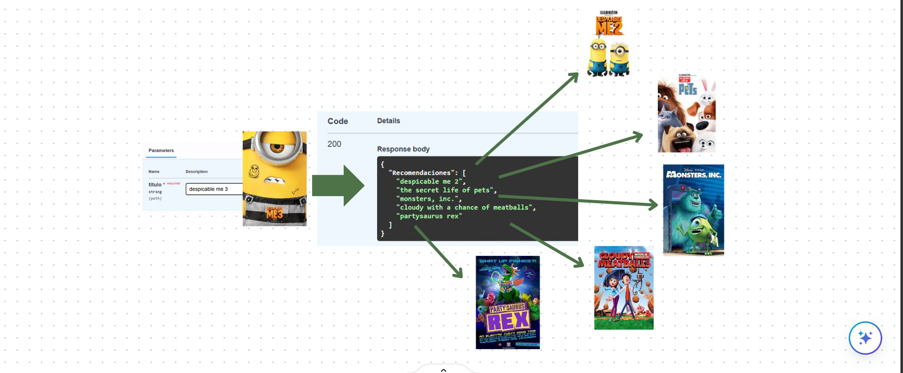
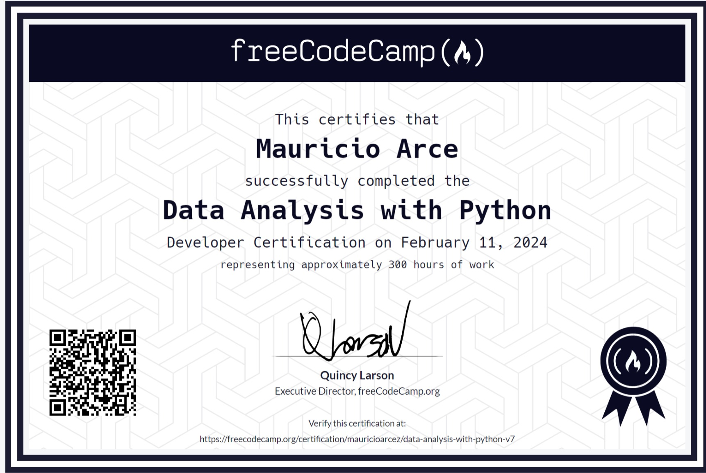

Ingeniero-Analista de Datos con background en Economía, lo que me permite analizar datos con un enfoque orientado al negocio. Cuento con experiencia en Big Data con PySpark y Hadoop, en machine learning y NLP. Tengo habilidades sólidas en estructura y modelado de datos, desarrollo de pipelines ETL, así como en almacenamiento y optimización de datos en la nube, Con especialización en Google Cloud Platform (GCP) y conocimientos en AWS y Azure. Poseo experiencia en orquestación de datos utilizando Airflow y generación de reportes estadísticos con herramientas como Power BI, Looker Studio y Plotly. Además, domino SQL, Python y Pandas, con más de 2 años de experiencia práctica.
En el ámbito colaborativo, destaco por mi capacidad de resolución de problemas complejos, adaptabilidad para aprender rápidamente nuevas tecnologías o metodologías, y comunicación efectiva para traducir resultados técnicos en insights claros para la toma de decisiones.
Proyectos recientes

DataPulse: Reseñas y Recomendaciones.
Consultoría de análisis de sentimiento para negocios gastronómicos, diseñando y gestionando un Data Warehouse, Pipelines ETL automatizados y Data Marts para visualización y Machine Learning.
Automatización de procesos en Airflow con Cloud Functions transformando un proceso manual en un flujo completamente automatizado, reduciendo errores humanos y optimizando los tiempos de procesamiento.
Integración de múltiples fuentes de datos al DW, incluyendo Google Maps y Yelp, para estructurar y enriquecer la información de reseñas, dividiendo luego la información en distintos datamarts.
Visualización de datos en Power BI, para destacar métricas y mejorar la claridad de los datos.Modelado de datos utilizando un modelo copo de nieve para el DW y optimizar el almacenamiento, y un modelo estrella para los datamarts de reporting y ML optando por la velocidad de consultas.
Monitoreo de rendimiento con BigQuery Execution Plan evaluando métricas de rendimiento como el tiempo de ejecución, bytes procesados, complejidad de la consulta, particiones y clustering de tablas.
#Airflow #BigQuery #CloudFunctions #SentimentAnalysis #StorytellingVisual #PowerBI #DAX #CloudStorage #ETL #EDA #KPIs

ENACOM Internet Argentina
Análisis del comportamiento de servicios de internet en Argentina a nivel nacional. con el objetivo de identificar tendencias clave y oportunidades de mejora.
Integre múltiples fuentes de datos, incluyendo INDEC y ENACOM, para estructurar y enriquecer la información.
Realicé un ETL para transformar faltantes y errores de datos en el uso de tecnologías y velocidades de conexión, mejorando la unicidad del análisis en un 70% en términos de duplicidad, claves primarias, foráneas y consultas.
Creación de stored procedures para automatizar procesos y mejorar la eficiencia en la manipulación y transformación de los datos dentro de la base de datos.
Optimizar el rendimiento de las consultas en SQL Server mediante el uso de índices DBCC y Execution Plan para el análisis de la base de datos y el ajuste de rendimiento.
Visualización de datos en Power BI, para medir KPIs accionables de los datos.
#EDA #StorytellingVisual #ETL #PowerBI #DAX #Pandas #Python #PowerQuERY #DBCC #Excel #KPIs

API Modelo de recomendación de peliculas
Desarrolle una API para recomendar películas basada en similitudes del coseno y técnicas avanzadas de procesamiento de lenguaje natural (NLP).
Implemente un ETL para mejorar la unicidad y claridad de los datos hacia la API. Tratando valores faltantes con técnicas de ML. Procesamiento de texto con normalización, lematización, expresiones regulares y vectores TF-IDF para preparar los datos textuales de las películas y mejorar la calidad de las recomendaciones.
Desplegué una API en FastAPI, consumida por una interfaz web, para ofrecer recomendaciones en tiempo real con información detallada de películas y actores.
Optimice el almacenamiento con almacenamiento columnar, mejorando la velocidad de consultas de la API.
#NLP #TFIDF #FastAPI #Scikit-Learn #TruncatedSVD #Render #RecomendadorDePelículas #Parquet #MachineLearning
Analisis de Atención y Servicio en Call Centers.
Medición de rendimiento en empleados de un Call Center. con el objetivo de identificar cuellos de botella y tiempos de espera.
Implemente un ETL para mejorar la unicidad y claridad de los datos hacia los reportes. Tratando valores faltantes con técnicas de ML.
Identifique cuellos de botella y mejoras en tiempos de espera. Para medir el rendimiento de los empleados
Entregué un reporte de conclusiones para que la gerencia pueda tomar decisiones basadas en datos.
#PowerBI #KPIs #DataVisualization #CallCenter #Scikit-learn #KNN
Certificaciones
Data Science - Henry - Nov24
#SQL #GCP #PowerBI #MachineLearning #Python #BigData #NoSQL

Data Analysis with Python - FreeCodeCamp - Feb24
#EDA #Python #NumPy #Seaborn #MatplotLib #Scikit-Learn
Data Analytics - Informatorio Chaco - Dic23
#DataLakes #DataWarehouses #SQL #Flask #API #Python #BigData

Desarrollo Web con Python - Informatorio Chaco -
#Python #Django #SQL #Git #POO #Backend
Contactame y hagamos la diferencia.
¿Tienes un proyecto en mente o necesitas ayuda para convertir tus datos en decisiones accionables?
¡Hablemos! Estoy disponible para colaborar en proyectos desafiantes y crear soluciones basadas en datos que marquen la diferencia.


{kind=link}
{kind=link}
{kind=link}
{kind=link}